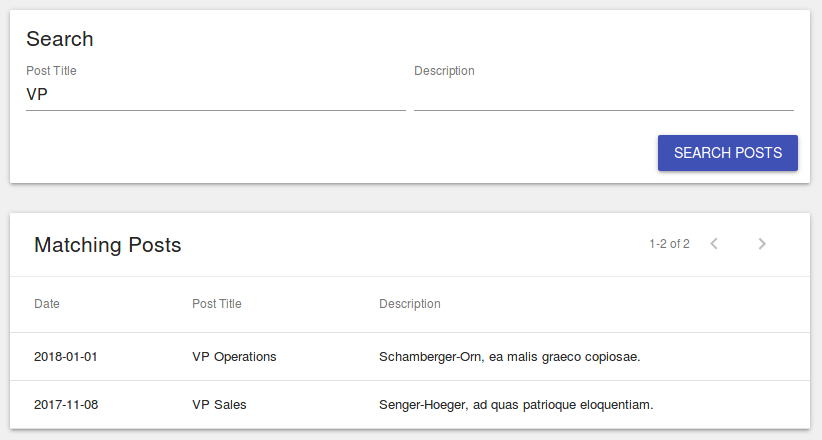

Creating a Searchable ListView¶
To create a searchable ListView, you need to create a component that wires up a <SearchView />'s onSearch() Event to your <ListView />'s "where" prop.

Searchable ListView Example¶
The following code creates a searchable ListView component:
interface ISearchableListState {
where: object;
}
export class SearchableList extends React.Component<any, ISearchableListState> {
constructor(props: any) {
super(props);
this.state = {
where: {}
};
}
onSearch(newWhere: object) {
this.setState({
where: newWhere
});
}
render() {
return (
<div>
<Card>
<Typography variant="title">Search</Typography>
<SearchView
model="Post"
onSearch={(where) => this.onSearch(where)}
>
<SearchField name="title" />
<SearchField name="description" />
<SearchAction label="Search Posts" />
</SearchView>
</Card>
<Card>
<ListView
title="Matching Posts"
model="Post"
fields={[
'post_date',
'title',
'description',
]}
where={this.state.where}
/>
</Card>
</div>
);
}
}
In the example above we create a new, stateful, <SearchableList /> component.
This component's state contains a single item: where, which contains the
where clause that is automatically generated by the RevJS <SearchView />
component.
When the <SearchAction /> is triggered by the user, the onSearch() event
is fired, which in-turn updates the state of the <SearchableList /> component.
This then triggers a re-render of the <SearchableList /> component, which then
passes the updated where clause to the <ListView />, which triggers it
to re-fetch the matching data.
(Complete working example here).